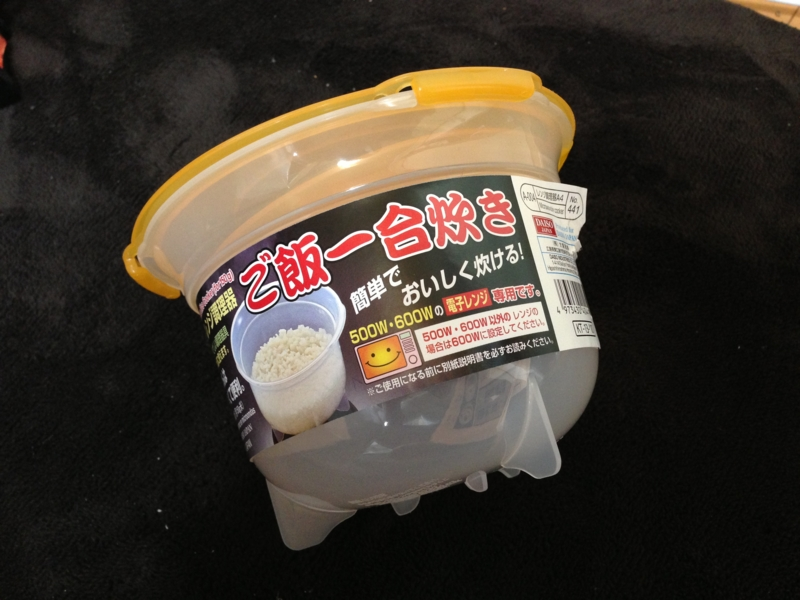

電子レンジ調理器「ご飯一合炊き」
執筆日時：

ダイソーで「ご飯一合炊き」という商品を買ってみた（ダイソー｜ダイソーホームページ｜スタッフおすすめ！）。値段はもちろん105円（税込み）。レンジで簡単にご飯が炊けるんだそうな。パスタの方は結構役立っているし、もしかしたらこれも便利かもしれない。
けど、結論から言うと結構手間がかかった。
- コメを研ぐ。水切りが付いているのがいいなぁ
- コメを研いで水をよく切ったら、水 200 ml を足す
- レンジに入れて 600W で 5分間
- レンジに入れて 200W で 12分間
よく考えたらうちには炊飯器があるわけで、そっちだったらワンタッチなわけで。しかもウチのレンジは物心ついた時から実家にある年代物で、乾燥機と一緒に使うとブレーカーが落ちるわけで。こんなに手間がかかるなら、あんまりいらんかった気がする。とはいえ、炊飯器の方も大学生の頃から使ってる安物で、いつ爆発してもおかしくない。とりあえずこういうのをもっておくのもいいのかもしれない。

炊き上がりは、ちょっと硬かったけどまぁまぁ。もう少し浸して、水切りをもう少し適当にすれば、手順通りにやってちょうどいい感じに炊き上がりそう。

あと、レンジに入れると皿がめちゃくちゃ熱くなるので、別売りのトレイを買うとよいようだ。目に入らなかった……
追記
レンジで焼きそばが作れるという容器も買ってしまったので、今度試す。